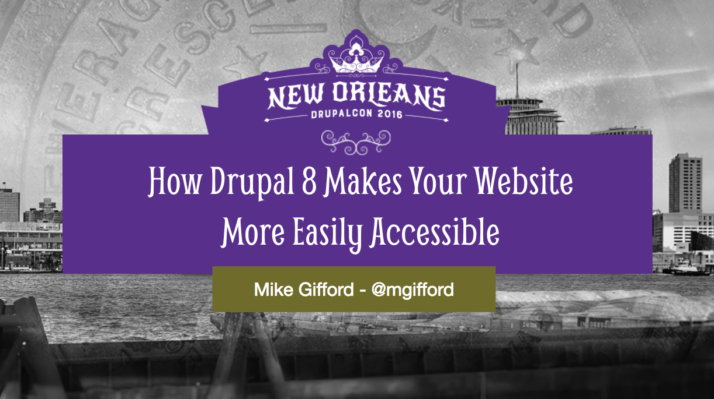

Getting to know Drupal 8
Accessibility Tools & Techniques
@emarchak
emarchak.github.io/drupal8-a11y
Erin Marchak
@emarchak
Myplanet
We build engaging web and mobile
products for the enterprise
@myplanetHQ
What am I going to cover?
- Why I'm here
- A11y & Drupal 8
- How to identify a11y gaps
- How to resolve a11y gaps
- Further resources
Why I'm here
A Case Study
AMI
Myplanet had a lot of empathy for what we were trying to do.
They felt and understood the mission we had for the site.
Virginia Vuleta
Director, Digital Strategy, Accessible Media Inc
- User Experience Testing
- Design Audits
- A11y Audits by David MacDonald
- Headless components using React.js
RuPaul in a large blonde wig, saying "put your money where your mug is.
A11y & D8
A11y
The power of the Web is
in its universality.
Tim Berners-Lee
Types of barriers
- Physical, motor or mobile
- Visual
- Auditory
- Learning
- Speech or language
- Mental, intellectual or developmental
Types of solutions
- Keyboard, mouse & touch navigation
- Screen readers compatibility & descriptive video
- Captioning
- Legible design & information architecture
- Translatable content
- Trigger warnings for content

- Level A - Essential
- Level AA - Preferred
- Level AAA - Optional (nice, but in-acheivable)
D8
#D8AX - Drupal 8 Accessibility eXperience
A11y in Drupal 8

How Drupal 8 Makes Your Website More Easily Accessible
Tyler, The Creator rapping the line "I think I'm wasting my damn time" from his music video Yonkers.
We didn't want technically accessible, we wanted beautifully accessible
How to identify a11y gaps
Visual Testing
- Plan heading structure early
- Prioritize function over form
- Allow indicators
Automated Functional testing
Manual Functional testing
- VoiceOver for macOS/iOS
- TalkBack for Android
- NVDA for Windows
- JAWS for Windows
User Experience testing
- Pairs of researchers meet with individual users
- Examine behaviours & attitudes relevant to the workflow
How to resolve a11y gaps
Functional solutions
Code is available at github.com/emarchak/drupal8-a11y
Landmark Labels
Add descriptive aria labels to page landmarks.
<main aria-label="{{ 'Content'|t }}">
On-page scrolling
Animate the scrolling and handling of focus.
$('html, body')
.animate({scrollTop: targetPosition.top}, 600)
.promise()
.then(function () {
$(target).focus();
});
Relate block titles & labels
Use aria labelled by on blocks to help with association.
<a
id="{{ cta_id }}"
class="btn btn-default"
href="{{ content.field_call_to_action[0]['#url'] }}"
aria-labelledby="{{ cta_id }} {{ heading_id }}">
Form Errors
Enable Inline Form Errors module, & remove HTML5 required attribute.
if (isset($variables['attributes']['required'])) {
unset($variables['attributes']['required']);
}
Aural Announcements
Use Drupal.announce to inform users when the UI has updated.
Drupal.announce(updates, 'polite');
Drupal.announce(updates, 'assertive');
Drupal Console CLI
Use drupal console to speed up development!
Experiential solutions
Visual Design Best Practices
UX Testing Best Practices
- Mixing remote and in-person testing
- Bring-your-own-device
- Emphasis on depth over breadth
Further Resources
RuPaul in a different large blonde wig, wagging her figner and saying "I don't want to hear any goddamn excuse"
Thank you
@emarchak / @myplanetHQ
emarchak.github.io/drupal8-a11y